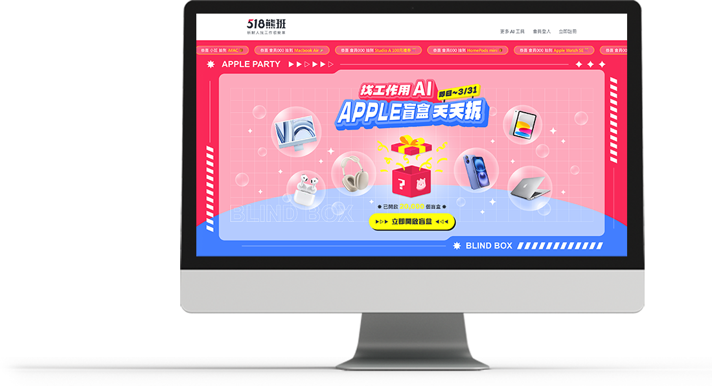
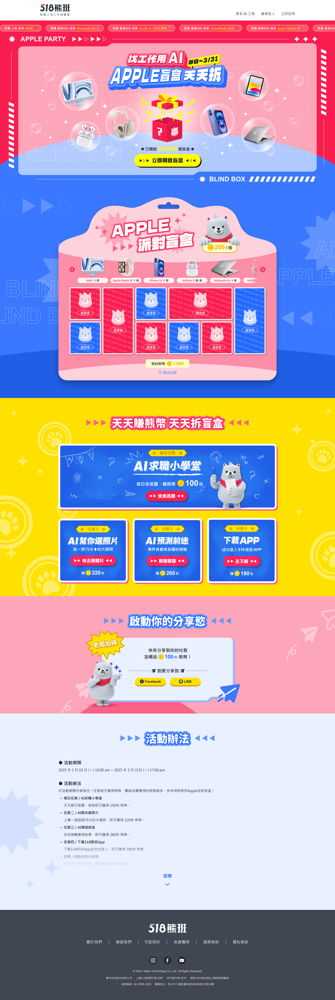
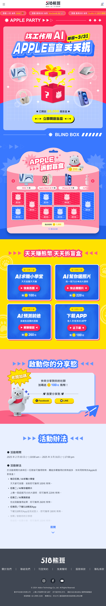

設計理念
主視覺
以驚喜感的禮物盒、吸睛的獎品，加上得獎者的跑馬燈，讓整體視覺呈現活潑、好玩有趣的氛圍感，吸引用戶看到也想抽抽看、試手氣。
盲盒活動
參考盲盒包裝設計，加上抽抽樂的概念，做出線上盲抽的樂趣感。
引導試用AI功能
以賺熊幣抽盲盒的方式，吸引新用戶試用AI新功能後，能夠順利完成註冊。
分享賺熊幣
不僅讓用戶繼續回來使用、賺熊幣，也能增加活動曝光度。

希望藉由此次活動，吸引新用戶註冊。
以盲盒概念為主軸，參考盲盒包裝設計，發想線上抽盲盒的方式。
以驚喜感的禮物盒、吸睛的獎品，加上得獎者的跑馬燈，讓整體視覺呈現活潑、好玩有趣的氛圍感，吸引用戶看到也想抽抽看、試手氣。
參考盲盒包裝設計，加上抽抽樂的概念，做出線上盲抽的樂趣感。
以賺熊幣抽盲盒的方式，吸引新用戶試用AI新功能後，能夠順利完成註冊。
不僅讓用戶繼續回來使用、賺熊幣，也能增加活動曝光度。


僅供作品展示用，實際資訊以官方為主。